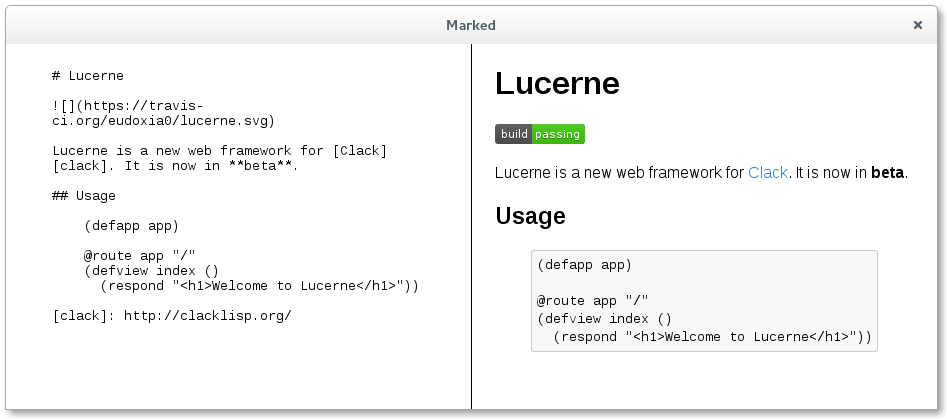

Installation
Until Ceramic is available from Quicklisp, you have to clone it to your
Quicklisp local-projects directory. Assuming your Quicklisp directory is
~/quicklisp:
git clone https://github.com/ceramic/ceramic.git ~/quicklisp/local-projectsThen, either restart Lisp or run (ql:register-local-projects).
Getting Started
First, we need to load Ceramic. We do this with Quicklisp:
CL-USER> (ql:quickload :ceramic)Ceramic needs to download some things to run, so let's do that:
CL-USER> (ceramic:setup)Now we're all set up. Let's start creating some browser windows. Run the following code:
;; Tell Ceramic we're going to be prototyping
(ceramic:interactive)
;; Create a browser window
(defvar window (ceramic:make-window :url "https://www.google.com/"
:width 800
:height 600))
;; Show it
(ceramic:show-window window)An 800-by-600 pixel browser window pointed at Google should pop up.
Building a Desktop Web App
With Ceramic, we can write a web application – using Clack– and create windows that use it.
We'll be using Lucerne, a web framework built on Clack to write the web app, and Ceramic to use it as a desktop app.
First, load Lucerne:
CL-USER> (ql:quickload :lucerne)Then, tell Ceramic we're going to use the interactive mode:
CL-USER> (ceramic:interactive)Now, let's create a basic application. The source code and system definition of
this app is in the examples/hello-world/ directory of the Ceramic source
code, so you can play around with it.
(in-package :cl-user)
(defpackage ceramic-hello-world
(:use :cl :lucerne)
(:export :run))
(in-package :ceramic-hello-world)
(annot:enable-annot-syntax)
;; Define an application
(defapp app)
;; Route requests to "/" to this function
@route app "/"
(defview hello ()
(respond "Hello, world!"))
(defvar *window* nil)
(defvar *port* 8000)
(defun run ()
(setf *window*
(ceramic:make-window :url (format nil "http://localhost:~D/" *port*)))
(ceramic:show-window *window*)
(start app :port *port*))
(ceramic:define-entry-point :ceramic-hello-world ()
(run))
Don't worry about that define-entry-point macro, we'll get to that later.
Calling run, a browser window with the text "Hello, world!" should pop up.
Shipping
Ceramic can compile an application -- both produce an executable of the server
and compile all the required resources -- into a bundle, which is basically an
archive file. All you have to do is call the bundle function:
(ceramic.bundler:bundle :ceramic-hello-world)And that's it. Head over to the directory of the hello world example,
examples/hello-world/, you'll see a .tar file with the app's
executable. Extract it and run the app. A window should pop up and you should
see the 'Hello, World!' text.
You can also tell it where to store the bundle through an optional argument:
(ceramic.bundler:bundle :ceramic-hello-world #p"build/bundle.tar")More Complex Apps
Of course, a web application isn't just routes, you also have to bundle all sorts of assets. Ceramic takes care of that for you.
For this example, we'll use Marked: This is a simple Markdown editor and previewer. On startup, you get a window with two panes: On the left pane, you type Markdown code, and on the left, you get the rendered HTML. You can see it in action below:
To test the app locally, just run (marked:start-app). To deploy the app, we
run the bundler command:
(ceramic.bundler:bundle :marked)Extract the app and run it: You'll see the window pop up and you can start editing. Close it and the app shuts down.
The way Ceramic handles resources is by associating tags (such as web-assets
or data-files) to certain pathnames relative to the system's source
directory. In development, you reference a resource tag and get the pathname
to that source directory. When bundling the app, resource directories are
copied, and in production, when you reference a tag, you get the pathname to the
copied directory inside the app's bundle.
If you look at the source of the Marked application, you'll see resources are defined like this:
(define-resources :marked ()
(assets #p"assets/")
(templates #p"templates/"))
What this means is the tag assets is associated to the assets/ directory
in the directory of the :marked system, and the templates tag is
associated to the templates/ directory. You can associate tags to
directories at any depth.
We the resource-directory function to get the directory associated to a
tag. In Marked we use this to set the directory where templates are stored so
Djula can access them:
(djula:add-template-directory
(resource-directory 'templates))
(defparameter +index+
(djula:compile-template* "index.html"))
A useful function – to prevent you from calling merge-pathnames all
the time – is the resource function: This takes a tag and a
pathname, and is the equivalent of adding that pathname to the end of the
directory associated to that tag:
(resource 'assets #p"css/style.css")
;; is the same as
(merge-pathnames #p"css/style.css"
(resource-directory 'assets))